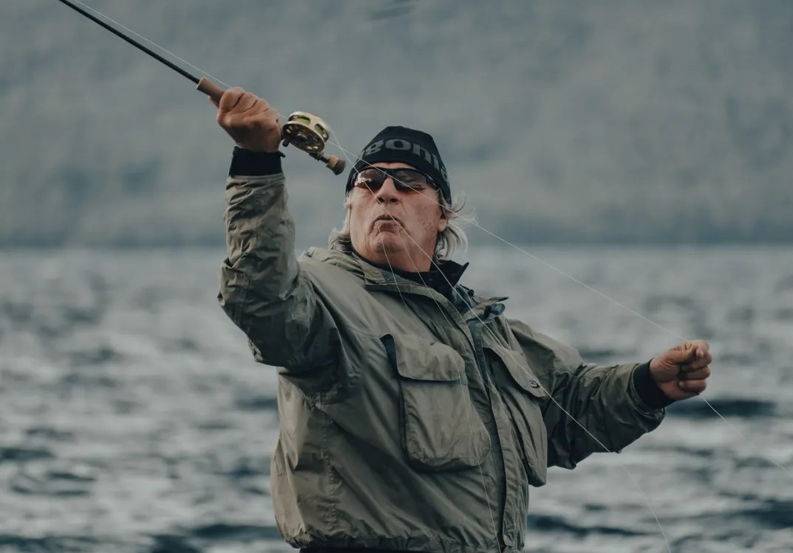

The house sits in Shandaken, in New York's Catskill Mountains, right on Route 28, between two ski mountains — Belleayre and Hunter. It sleeps 12 (Suite 5, Big Room 4, Small Room 3) and has a sauna and an outdoor fire pit.
All drive times below are approximate from the house. Mountain roads wind — check your GPS and confirm hours and conditions before you head out.
Spring · March–May
Theme: opening day of trout season + the waterfalls at their biggest

1. Fishing on Esopus Creek
New York's trout season opens April 1, and Esopus Creek is one of the Catskills' most famous fly-fishing streams — the spring hatches bring the best fishing. The best stretches run right along Route 28, minutes from the house, so you can fish a few hours in the morning and be back for breakfast.
Drive: about 5 minutes
Note: you need a New York State fishing license. The harvest season runs April 1 to October 15, with size and bag limits.
2. Kaaterskill Falls hike
New York's tallest waterfall (260 feet, two tiers), at its fullest in spring when the snowmelt runs. From the trailhead on Route 23A it's a 1–2 hour round trip, with steep stone steps — wear shoes with good grip.
Drive: about 40 minutes
Note: swimming at the falls themselves is not allowed (DEC rules). To swim, head to the beaches at North-South Lake nearby.
3. Maple Weekend (two weekends in March)
Visit nearby sugarhouses to see maple syrup being made and taste it fresh. Several farms around Saugerties open to visitors — great with kids.
Drive: about 45 minutes (Saugerties area)
4. Spring skiing + Hunter's pond skim
At the end of March the mountains are still open. Hunter runs its annual Denim Dash pond skim at the end of March — fewer crowds, warm sun, and a straight slide from ski season into spring.
Drive: about 25 minutes (Hunter Mountain)
5. Ashokan Rail Trail — bike or walk
A flat trail along the Ashokan Reservoir, about 11.5 miles end to end, good for walking, running and cycling, with reservoir and mountain views. Easy for the whole family.
Drive: about 25 minutes
Staying here: spring is the quiet season — the house is peaceful, the creek is loud, you fish and hike by day, then roast marshmallows by the fire pit and warm up in the sauna at night.
Summer · June–August
Theme: water, tubing, music festivals — the busiest time of year

1. Tubing on Esopus Creek (Town Tinker, Phoenicia)
Rent a tube in Phoenicia and float about 5 miles down Esopus Creek, with a shuttle back to the start. Flow depends on reservoir releases; weekends in summer are busy, so go early.
Drive: about 10 minutes
2. Belleayre Beach (Pine Hill Lake)
A guarded lake beach for swimming, kayaking, paddleboarding and beach volleyball. Bring a picnic blanket and you can spend the whole afternoon — great for families with small kids.
Drive: about 12 minutes
3. Rail Explorers rail bikes (Phoenicia)
Pedal a four-person rail bike along the old railway. The River Run is about 8 miles, 2.5 hours, following Esopus Creek through the forest; there are also sunset and lantern night rides. The station is an 1899 depot with a small railroad museum inside.
Drive: about 10 minutes
4. Hunter Mountain: scenic skyride + zipline
Ride the Kaatskill Flyer lift to the 3,200-foot summit for the view, or take the NY Zipline — one of the longest and highest in North America, nearly 5 miles with drops up to about 600 feet. There's also mountain biking and disc golf on the mountain.
Drive: about 25 minutes
5. Swimming at Peekamoose Blue Hole
A natural blue swimming hole on Rondout Creek, with famously clear water — the Catskills' best-known swimming spot. It gets very busy in summer and you need a free DEC permit booked online in advance; spots are limited, first come first served.
Drive: about 40–45 minutes
Note: you must get a permit in advance — no permit, no entry.
6. North-South Lake beaches (Haines Falls)
A lake about 10 minutes' drive from Kaaterskill Falls, with two swimming beaches — swimming is allowed when lifeguards are on duty — plus canoe, kayak and paddleboard rentals. The falls themselves don't allow swimming; this is where you swim.
Drive: about 40–45 minutes (about 10 minutes from Kaaterskill Falls)
Staying here: in summer the house is home base — play in the water and hike by day, come back in the evening for a barbecue around the fire pit with all 12 of you, sauna before bed, and Phoenicia is 10 minutes away for food and supplies.
Fall · September–November
Theme: foliage + harvest festivals — the Catskills at their most beautiful

1. Foliage drive on Route 28
Route 28, the Catskill scenic byway, runs right past the house. The leaves turn first at higher elevations in late September, and peak in the valleys in the first two weeks of October. Drive toward Belleayre or Hunter and every stretch is worth a stop. Columbus Day weekend is the busiest — weekdays are quieter.
Drive: right outside the door
2. Hunter Mountain: Colors in the Catskills (October weekends)
Hunter's fall festival, with live music, vendors, the skyride up for the foliage, and a stein-holding contest. It runs three weekends in October (in 2026: October 3–4, 10–11, 17–18; dates vary slightly each year).
Drive: about 25 minutes
3. Hudson Valley Garlic Festival (Saugerties, late September)
The Hudson Valley's biggest garlic festival — garlic ice cream, cooking demos, farm stalls. Go in the morning, come back for the foliage in the afternoon.
Drive: about 45–50 minutes
4. Apple picking + cider tasting (New Paltz)
Pick apples and drink fresh-pressed cider at Twin Star Orchards / Brooklyn Cider House. The farm looks its best in fall — great for photos.
Drive: about 45 minutes
5. Woodstock day trip
Browse the shops and galleries on Tinker Street, the farmers' market on Saturdays, and shows at Bearsville Theater. Small town plus fall foliage is the classic Catskills day.
Drive: about 35 minutes
Staying here: fall is the most in-demand time for foliage. The house sleeps 12 at once, so one big family or a few families together work out much cheaper than separate hotel rooms — and the stars come out over the fire pit at night.
Winter · Late November–Early April
Theme: two ski mountains, one home

1. Skiing / snowboarding at Belleayre Mountain
62 trails, a gondola, a ski school and a kids' area. The season usually runs late November to early April. You're on the slopes a few minutes after leaving the house — then back for the sauna and the fire pit.
Drive: about 12–15 minutes
2. Skiing / snow play at Hunter Mountain
67 trails, 100% snowmaking, Epic Pass accepted. Beyond skiing there's a snow tubing park about 1,000 feet long (no skiing needed), plus themed weekends through the winter: the New Year's Eve torchlight parade and fireworks (December 31), Pride Weekend, Black Ski Weekend, and more.
Drive: about 25 minutes
3. Plattekill Mountain (small family mountain)
A family-run mountain in Roxbury, 41 trails, fewer crowds and great snow, open Friday to Sunday plus holidays; night tubing on Friday and Saturday evenings. A good escape from the big-mountain crowds.
Drive: about 40–45 minutes
4. Cross-country skiing / snowshoeing
Belleayre has cross-country trails; the Mountain Trails center in Tannersville has about 35 km of groomed trails. If downhill isn't your thing, snowshoe slowly through the winter forest instead.
Drive: about 25–30 minutes
5. Lessons + carpool (house services)
Your host offers private ski and snowboard lessons at Belleayre or Hunter, plus carpool rides from New York City. Guests can book lessons and rides, arrive and go straight to the snow — your host can help coordinate gear and plans.
Drive: mountains about 12–25 minutes; carpool from NYC about 2.5 hours
Staying here: winter is the house's main season — two ski mountains within half an hour, the sauna to recover after a day on the slopes, hot drinks by the fire pit, and 12 people under one roof. No hotel breakfast rush — put your boots on and go.
Practical Notes
- Nearest towns: Phoenicia, about 10 minutes (Phoenicia Diner, restaurants, shops, gas); Woodstock, about 35 minutes; Saugerties, about 45–50 minutes (supermarkets, big stores); Kingston, about 40 minutes.
- From New York City: I-87 north to the Kingston exit, then Route 28 west — about 2.5 hours.
- Hiking notes: the Slide Mountain trailhead (the Catskills' highest peak, 4,180 feet) is about 20–25 minutes away; the Giant Ledge / Panther Mountain trailheads (along Route 47) are about 15–20 minutes away; Giant Ledge is about 3.2 miles round trip and a great sunset spot.
- Plan ahead: Peekamoose Blue Hole needs a DEC permit in advance; fishing needs a New York State fishing license; book ski tickets early for busy winter weekends; book the house early for foliage season and winter holiday weekends.
- Ticket prices: prices at each attraction vary by season — check the official site before you go.
Stay Here, Play All Year
Picked a season? See the rooms and rates on the House page and book, or message us directly.

Scan to add me on WeChat